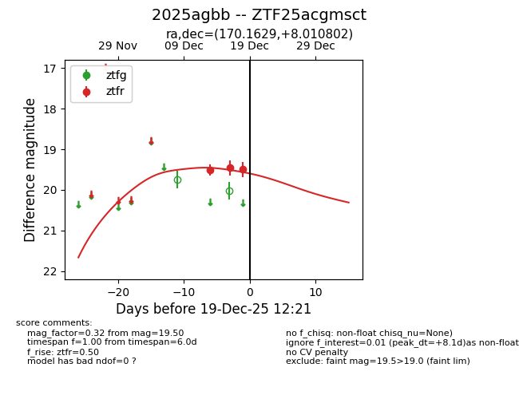
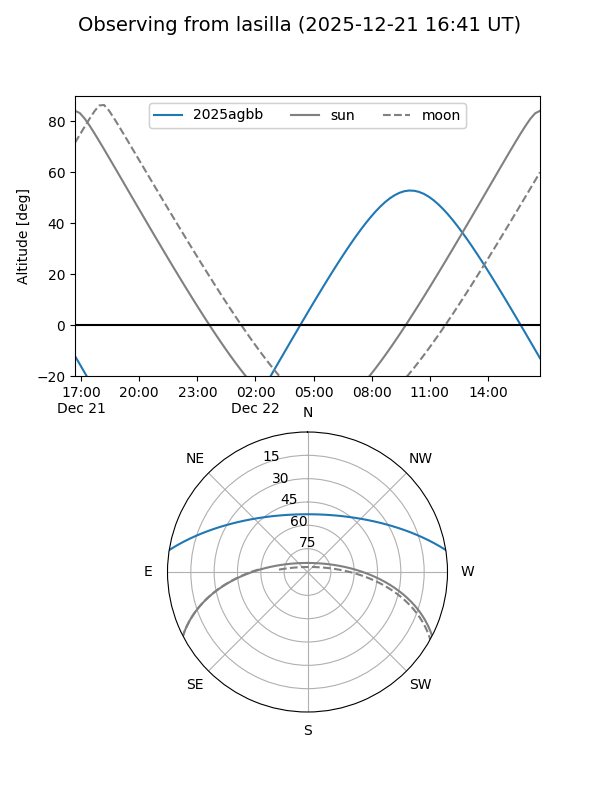
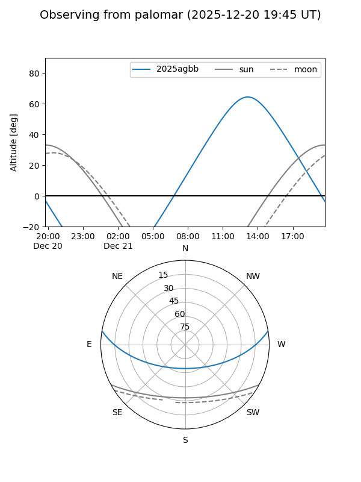
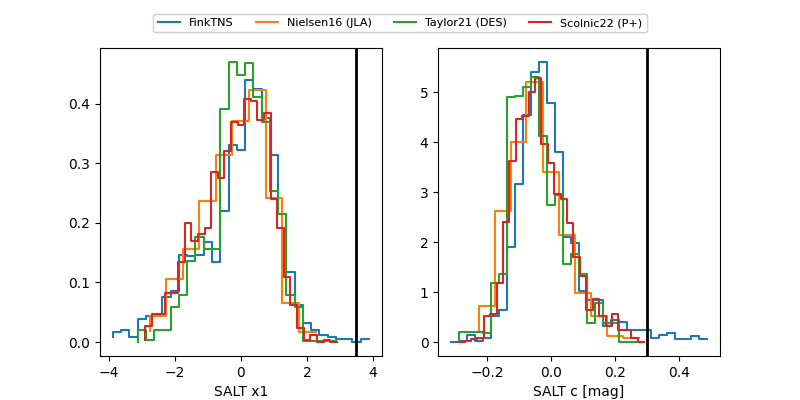

2025agbb
Target 2025agbb at 2025-12-19 12:22
Aliases and brokers:
FINK: fink-portal.org/ZTF25acgmsct
Lasair: lasair-ztf.lsst.ac.uk/objects/ZTF25acgmsct
ALeRCE: alerce.online/object/ZTF25acgmsct
TNS: wis-tns.org/object/2025agbb
YSE: ziggy.ucolick.org/yse/transient_detail/2025agbb
alt names
ZTF25acgmsct (ztf,fink_ztf)
2025agbb (tns,yse)
Coordinates:
equatorial (ra, dec) = 170.1629,+8.01080
equatorial (HMS+DMS) = 11:20:39.08,+08:00:38.89
galactic (l, b) = (250.3709,+61.23512)
Flags:
Photometry:
last ztfr=19.50
3 ztfr detections
Lightcurve

Visibility


Additional plots
